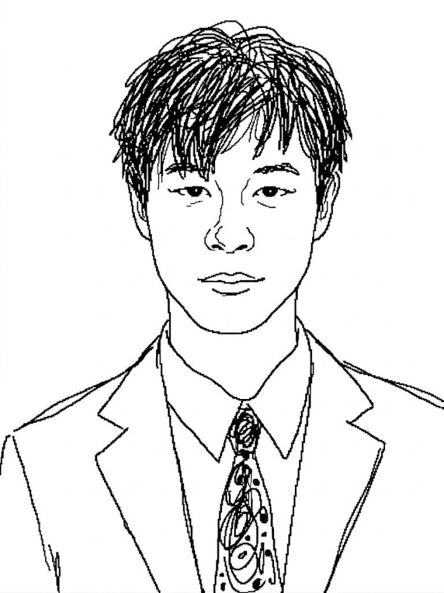

I'm a student at Williams College.
I'm at the University of Oxford for the 2026-27 academic year.
This summer I will be at the University of Maryland.
Interests: Lie theory, differential geometry, and representation theory.
Contact: garyhu06 at gmail dot com
Travel ScheduleSince Fall 2024, I am working with Rongwei Yang on a series of papers to build a spectral theory for solvable Lie algebras. Drafts are available upon request. The tentative titles are:
At IAS/PCMI 2025 I wrote a short paper on extremal combinatorics with Paul Hamrick: